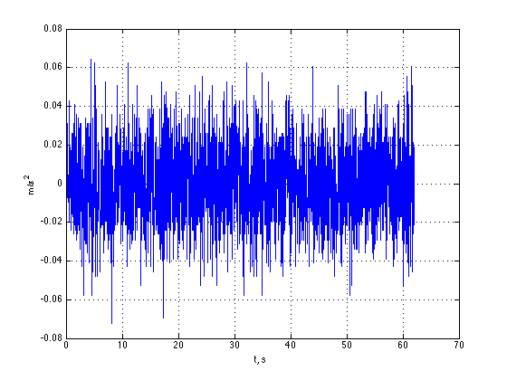
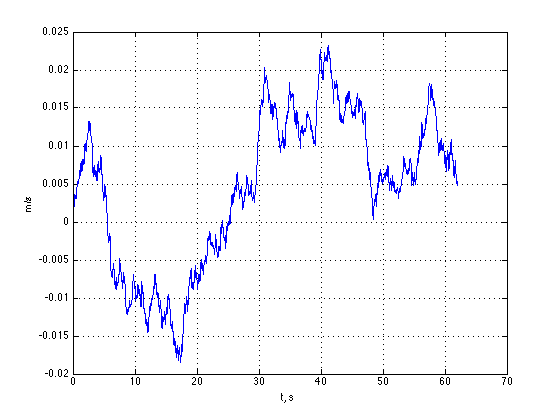
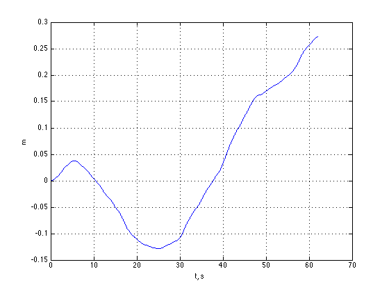
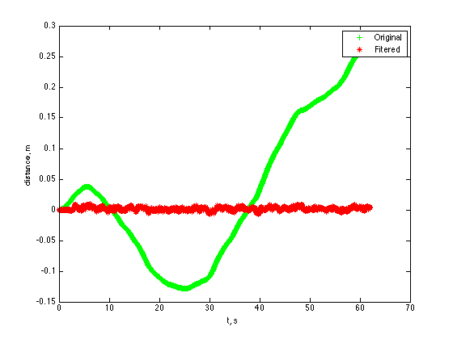

Pagreičio jutiklio triukšmo mažinimas
Maksim Norkin, AKSfm-15Problema
Triukšmas
Pagreičio jutiklio duomenis pagal x ašį
Integruojame
Greičio duomenis, integruojant pagreičio duomenis pagal x ašį
Integruojame
Atstumo duomenis, integruojant integruojant pagreičio duomenis pagal x ašį
Š altiniai
- Nuolatinė dedamoji
- Atsitiktinis pagreičio pokytis
- Vibraciniai triukšmai
- Temperatūriniai efektai
- Kalibravimo klaidos
Kalman filtras
(Linear Kalman filter)Modelis
$\hat{x}_k = \begin{bmatrix} p_k \\ v_k \end{bmatrix}$ $P_k = \begin{bmatrix} \Sigma_{pp} \Sigma_{pv} \\ \Sigma_{vp} \Sigma_{vv} \end{bmatrix}$Modelis #2
$\hat{x}_k = \begin{bmatrix} p_k \\ v_k \end{bmatrix} = \begin{bmatrix} p_{k-1} + \Delta t v_{k-1} \\ v_{k-1} \end{bmatrix}$$\hat{x}_k = \begin{bmatrix} 1 & \Delta t \\ 0 & 1 \end{bmatrix} \hat{x}_{k-1} = F_k \hat{x}_{k-1}$
$P_k = F_k P_{k-1} F_k^T$
Spėjimas ir matavimas

Spėjimo ir realaus matavimo vidurkis ir kovariacija
Spėjimo ir matavimas #2

Spėjimo ir realaus matavimo sujungimas
Tiesinis Kalman filtras

| $\mu$ | $\sigma$ | |
|---|---|---|
| Pradiniai | 0.0299 | 0.1196 |
| Filtruoti | 0.0017 | 0.0026 |
Išplėstas Kalman filtras
(Extended Kalman filter)Jacobian Matrica

Išplėstas Kalman filtras
| $\mu$ | $\sigma$ | |
|---|---|---|
| Pradiniai | 0.0299 | 0.1196 |
| Filtruoti | -0.0546 | 0.0288 |
Sekamas Kalman filtras
(Unscented Kalman filter)Sekamas Kalman filtras
| $\mu$ | $\sigma$ | |
|---|---|---|
| Pradiniai | 0.0299 | 0.1196 |
| Filtruoti | -0.0413 | 0.0253 |
Kas iš to
| $\mu$ | $\sigma$ | |
|---|---|---|
| Pradiniai duomenys | 0.0299 | 0.1196 |
| Tiesinis Kalman filtras | 0.0017 | 0.0026 |
| Išplėstas Kalman filtras | -0.0546 | 0.0288 |
| Sekamas Kalman filtras | -0.0413 | 0.0253 |
Simuliuoti duomenys
Tiesinis kalman filtras
Išplėstas kalman filtras
Tolimesnis darbas
- Skaičiavimai
- Dalelių filtras
- Įgyvendinimas įterptinėje sistemoje